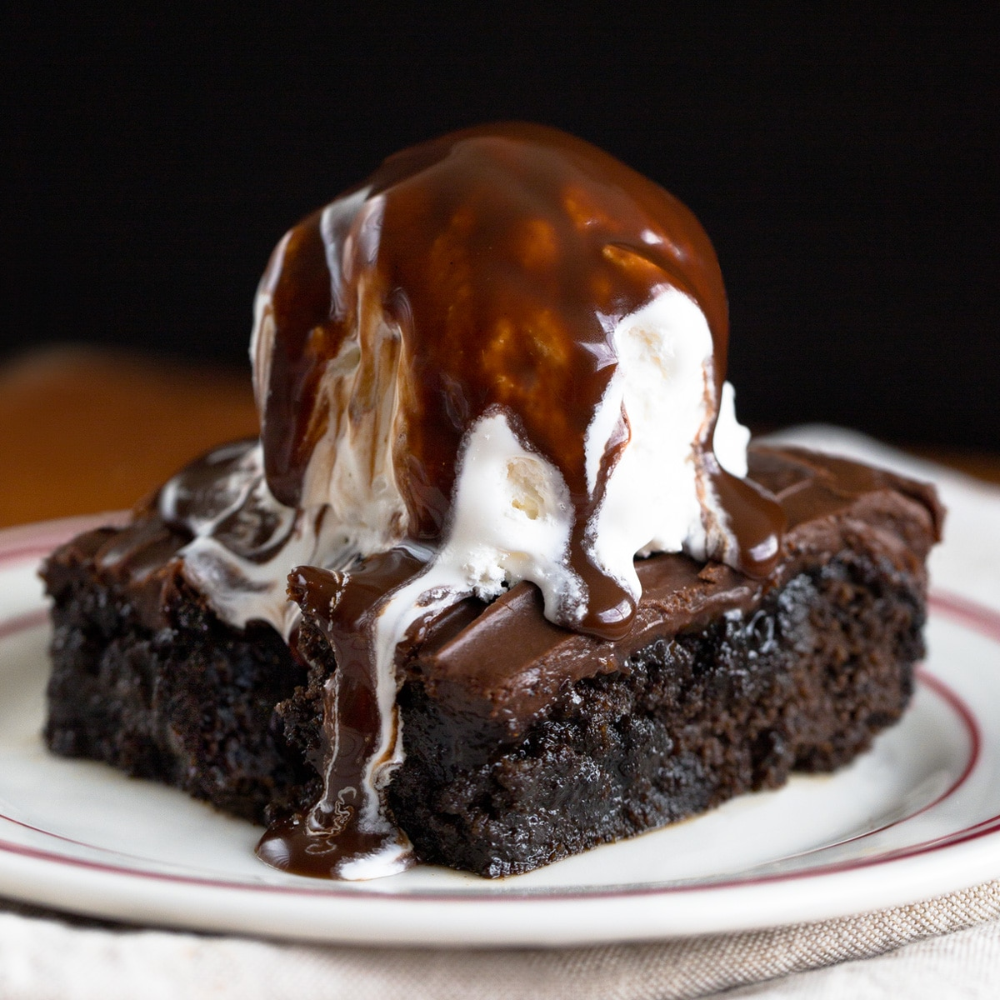

Chocolate Brownies
Origin: Chicago Source: Love & Lemons Category: DessertThis recipe enables you to make the chocolate brownies just like the ones you ate as a kid - super fudgy, moist, and chocolaty, with crispy edges and crackly tops.
Recipe Ingredients
- 2 eggs + water
- Powdered sugar
- PUnsweetened cocoa powder
- Oil
- Vanilla Extract
Recipe Steps
- First, mix together the dry and wet ingredients in two separate bowls.
- Next, combine the wet and dry ingredients.
- Then, pour the batter into an 8x8 inch baking pan lined with parchment paper.
- Finally, bake! Transfer the pan to a 325-degree oven and bake for 40 to 45 minutes, until a toothpick inserted comes out with a few crumbs attached.
Additional Food images
Tiramisù
Origin: Italy Source: NYT Cooking Category: Dessert
This recipe enables you to make the chocolate brownies just like the ones you ate as a kid - super fudgy, moist, and chocolaty, with crispy edges and crackly tops.
Recipe Ingredients
- 4 large egg yolks
- 1/2 cup/100 grams granulated sugar
- 3/4 cup heavy cream
- 1cup/227 grams mascarpone (8 ounces)
- 1 & 3/4 cups good espresso or very strong coffee
- 2 tablespoons rum or cognac
- 2 tablespoons unsweetened cocoa powder
- About 24 ladyfingers (from one 7-ounce/200-gram package)
- 1 to 2ounces bittersweet chocolate, for shaving (optional)
FOR THE CREAM
FOR THE ASSEMBLY
Recipe Steps
- Prepare the cream: Using an electric mixer in a large bowl, whip together egg yolks and ¼ cup/50 grams sugar until very pale yellow and about tripled in volume. A slight ribbon should fall from the beaters (or whisk attachment) when lifted from the bowl. Set aside.
- In a medium bowl, whip cream and remaining ¼ cup/50 grams sugar until it creates soft peaks. Add mascarpone and continue to whip until it creates a soft, spreadable mixture with medium peaks. Gently fold the mascarpone mixture into the sweetened egg yolks until combined.
- For the assembly, combine espresso and rum in a shallow bowl and set aside.
- Using a sifter, dust the bottom of a 2-quart baking dish (an 8x8-inch dish, or a 9-inch round cake pan would also work here) with 1 tablespoon cocoa powder.
- Working one at a time, quickly dip each ladyfinger into the espresso mixture -- they are quite porous and will fall apart if left in the liquid too long -- and place them rounded side up at the bottom of the baking dish. Repeat, using half the ladyfingers, until you’ve got an even layer, breaking the ladyfingers in half as needed to fill in any obvious gaps (a little space in between is O.K.). Spread half the mascarpone mixture onto the ladyfingers in one even layer. Repeat with remaining espresso-dipped ladyfingers and mascarpone mixture.
- Dust top layer with remaining tablespoon of cocoa powder.
- Cover with plastic wrap and let chill in the refrigerator for at least 4 hours (if you can wait 24 hours, all the better). Top with shaved or finely grated chocolate, if desired, then slice or scoop to serve.
Additional Food images


Oyakodon (Chicken and Egg Rice Bowl)
Origin: Japan Source: Love & Lemons Category: Japanese FoodOyakodon is a classic comfort food of Japanese home cooking. Tender pieces of chicken, onions, and eggs are simmered in an umami-rich sauce and then poured over a bowl of fluffy steamed rice. Simple, delicious, and utterly comforting, this is the kind of one-bowl meal you can cook in less than 30 minutes!
Recipe Ingredients
- Chicken thighs
- Sake
- Onion
- Eggs
- Mitsuba
- Seasonings: Dashi (Japanese soup stock), soy sauce, mirin, and sugar
- Steamed Rice
- Mitsuba
Recipe Steps
- Prepare the ingredients: Cut the onion, mitsuba/green onions, and chicken and crack the eggs.
- Cook the onion in the seasoning mixture.
- Add the chicken and cook until no longer pink.
- Drizzle egg mixture at two separate times. Garnish mitsuba/green onions.
- Spoon the finished dish over the bed of steamed rice in a donburi bowl.
Additional Food images